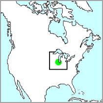

Why focus on the Chicago Region?
The Chicago Region, as defined by the vPlants Project, encompasses twenty-four counties from four states (Illinois, Indiana, Michigan, Wisconsin) surrounding the southern tip of Lake Michigan in the western Great Lakes region of the north central United States. This area shares a unique set of physiographic (relating to physical geography) and floristic (relating to plant life) features that were defined in many ways by the glacial history of the area. The watersheds and river systems also play an important role in linking this region together. In addition to the physical and biologic features of the Chicago Region, this is a key area to focus on due to the existence of the Chicago Wilderness consortium (external link). This unique organization of groups strives to promote, protect, and preserve the rich biota and flora of this same area surrounding the city of Chicago. One of the standing goals of vPlants is to provide quality data about the plants and fungi that occur in the Chicago Wilderness area at a central location.
The geographic and geologic features of the Chicago Region support a diversity of plants, fungi, and animals. The climate effects of Lake Michigan have a huge impact on the natural plant communities, but historic geologic features and events, such as the glaciers, played an even bigger part. Just as the glaciers played a critical role in the overall development of the physiographic features of the entire Great Lakes region, their influence on the land surrounding the southern tip of Lake Michigan was profound. An early predecessor to Lake Michigan, Glacial Lake Chicago (14,000 to 12,400 years ago), had complex marshes and drainage systems associated with it that were comparable in size to the Florida Everglades. Today, the sands deposited by historic dune complexes at that time (the Glenwood Beach / Dunes) and those from the later and larger Lake Algonquin (almost 12,000 years ago, Calumet Beach / Dunes) are striking features in terms of inland topography and soil type relative to today's lakeshore and current active beach and dunes. Similarly, the clayey glacial till deposits that remain in the Tinley and Valparaiso Moraine systems (originally created about 15,000 years ago), which skirt the Chicago Region have shaped the area's flora and biota. The Chicago Region meshes different floristic zones from the north, east, and west, and is also part of major bird and butterfly migration routes. Swink and Wilhelm (1994) put it elegantly when they said “it would be difficult to circumscribe another area of the North Temperate Zone with such geologic and physiographic diversity” and “our native flora reflects this.”
Learn more about Chicago Region plants.
Learn more about Chicago Region fungi.
Chicago Region

Region covered by vPlants
Related Web Sites
Encyclopedia of Chicago
The Great Lakes
Chicago Wilderness
Information provided on this page applies to the Chicago Region and may not be relevant or complete for other regions.
Footer Menu
Funded by Institute of Museum and Library Services (IMLS)
Citation: The vPlants Project. vPlants: A Virtual Herbarium of the Chicago Region. http://www.vplants.org
Copyright © 2001–2009 The vPlants Project, All Rights Reserved.
The Morton Arboretum, The Field Museum, Chicago Botanic Garden, Additional Partners